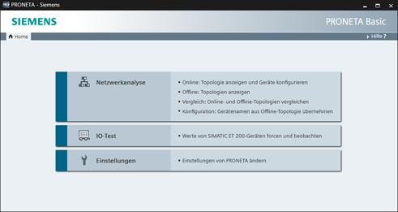
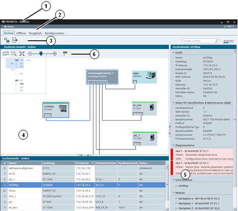
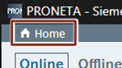
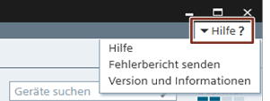

|
HINWEIS |
Im Rahmen dieser Dokumentation wird der Begriff „Gerät“ als Synonym für die Begriffe „Netzwerkteilnehmer”, „Knoten” oder „Komponente” verwendet. Jeder Anlagenteil, der mit einer eigenen IP-Adresse an der PROFINET-Kommunikation beteiligt ist, wird als „Gerät“ betrachtet. |
PRONETA Basic ermöglicht es Ihnen, eine von mehreren sogenannten „Aufgaben“ zu erfüllen. Aktuell sind dies folgende Aufgaben:
Anpassung der Software Einstellungen
Sie können die Aufgaben auf dem Startbildschirm („Home“) auswählen und während der Verwendung von PRONETA Basic jederzeit zum Startbildschirm zurückkehren, um eine andere Aufgabe auszuwählen.

Aufbau der Bildschirmanzeige
Das PRONETA Basic-Fenster ist generell in mehrere Bereiche unterteilt:
Eine Kopfleiste (1) im oberen Bereich
Eine Modusleiste (2), die den Wechsel zwischen den verschiedenen Betriebsarten oder einzelnen Schritten der ausgewählten Aufgabe ermöglicht
Eine Funktionsleiste (3), die besondere Funktionen für den aktuellen Modus bietet
Ein oder mehrere Fenster mit grafischen Ansichten einer Netzwerkkonfiguration (4) oder Tabellen mit relevanten Informationen (5) darunter, wie beispielsweise eine Gerätetabelle
Abschließend enthalten die grafischen Ansichten eine Symbolleiste (6), die je nach ausgewähltem Modus die Ausführung bestimmter Operationen ermöglicht.

Je nach Auswahl der Aufgabe und des Modus bieten die Funktionsleisten und Kontextmenüs der grafischen Ansichten und Gerätetabellen unterschiedliche Funktionen. Details können in den entsprechenden Abschnitten in Kapitel 3 im PRONETA Basic Benutzerhandbuch gefunden werden.
Die relative Größe der Ansichten kann geändert werden, indem die Grenze zwischen den Ansichten in der jeweiligen Richtung seitwärts gezogen wird. Mit den Symbolen “►”, “◄”, “▲” oder “▼” auf dem Fensterrand kann zwischen den Fenstern hin- und hergeschaltet werden.
Die Kopfleiste ist stets sichtbar, wenn PRONETA Basic ausgeführt wird und enthält zwei Bedienelemente:
Die Schaltfläche „Home“ am linken Ende der Kopfleiste. Durch Klicken auf diese Schaltfläche werden Sie immer zurück zum PRONETA Basic-Startbildschirm geführt.

Die Schaltfläche „Hilfe?“ am rechten Ende der Kopfleiste. Durch Klicken auf diese Schaltfläche wird ein Menü mit drei Befehlen geöffnet:
Mit „Hilfe“ wird auf der rechten Seite des Fensters ein Rahmen mit kontextspezifischer Hilfe geöffnet bzw. geschlossen. (Drücken der Funktionstaste „F1“ bietet jederzeit die gleiche Funktionalität.) Weitere Details finden Sie in der Hilfeansicht.
Mit „Fehlerbericht senden“ werden Informationen zum aktuellen Status von PRONETA Basic gesammelt. Ferner werden Sie aufgefordert, eine Fehlermeldung an SIEMENS abzusetzen, um die zukünftige Leistungsfähigkeit von PRONETA Basic zu verbessern.
„Version und Informationen“ öffnet ein kleines Popup-Fenster mit Informationen zu der von Ihnen ausgeführten PRONETA Basic-Version. Hier können Sie auch manuell nach aktuellen Updates für PRONETA Basic suchen.

Falls Sie in PRONETA Basic auf einen Fehler stoßen, verwenden Sie bitte den über die Schaltfläche „Hilfe?“ am rechten Ende der Kopfleiste verfügbaren Fehlermeldemechanismus.
PRONETA Basic erstellt dann einen diagnostischen Speicherauszug („Dump“) seines aktuellen Status sowie eine an das PRONETA Basic-Support Team zu sendende E-Mail mit diesem Speicherauszug als Anhang. (Das Erstellen des Speicherauszugs kann einige Momente dauern.)
Sie tragen zur ständigen Verbesserung von PRONETA Basic bei, wenn Sie dieser Benachrichtigung weitere Informationen vor dem Senden anfügen, wie z. B. die konkreten Probleme und Umstände des Fehlers sowie Möglichkeiten für uns, mit Ihnen hinsichtlich weiterer Fragen Kontakt aufzunehmen.